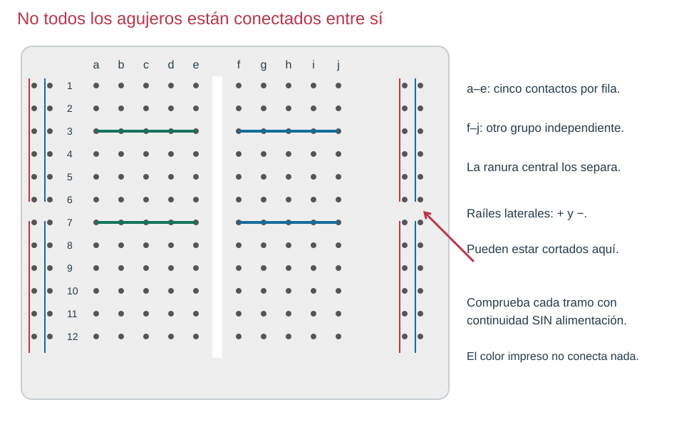
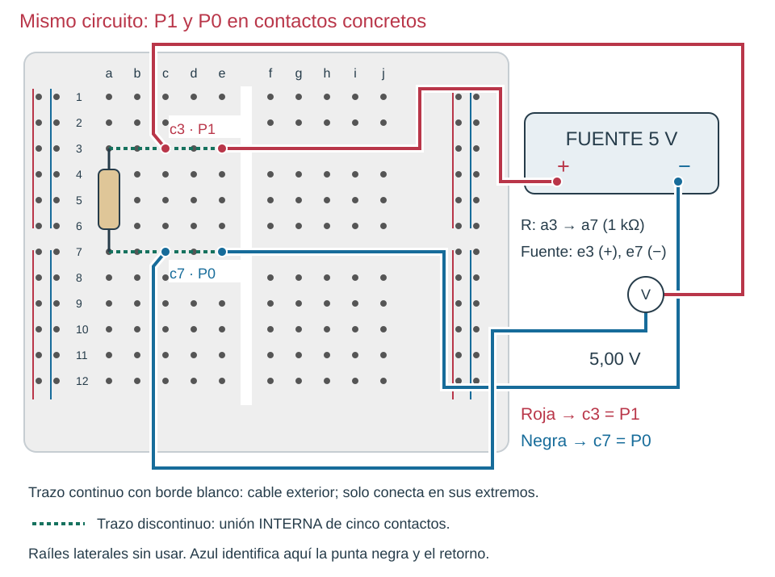

Contenido
La placa conecta por dentro
La protoboard tiene contactos metálicos bajo los agujeros. En la zona central suelen agruparse cinco contactos por fila. La ranura separa ambas mitades. Los raíles laterales distribuyen alimentación, pero pueden estar divididos en varios tramos y los de lados opuestos no están unidos automáticamente.

Comprueba antes de usar
- Sin fuente ni componentes, selecciona continuidad; negra en COM y roja en V/Ω. Junta las puntas para comprobar el instrumento.
- Compara a3 con e3: en una placa como la figura deben tener continuidad.
- Compara e3 con f3: la ranura debe separar los grupos.
- Compara dos puntos del mismo raíl en su primera mitad y luego a ambos lados del centro. Si hay corte, añade un puente solo si necesitas unir esos tramos.
- Comprueba también que raíl positivo y negativo NO estén unidos.
Primer montaje por nodos: fuente y resistencia
Trabaja primero con la resistencia de 1 kΩ del capítulo de medida. Necesitas solo dos nodos: P1 positivo y P0 negativo. Los agujeros concretos son una elección; las conexiones eléctricas deben coincidir con el esquema.

| Paso, sin alimentación | Contactos elegidos | Nodo del esquema |
|---|---|---|
| 1 · Coloca la resistencia | Una patilla en a3; otra en a7. | Une P1 con P0 A TRAVÉS de R. |
| 2 · Conecta positivo de fuente | Cable de + a e3. | a3–e3 forman P1. |
| 3 · Conecta negativo de fuente | Cable de − a e7. | a7–e7 forman P0. |
| 4 · Prepara voltímetro | Roja en c3; negra en c7, V ⎓. | Mide P1 respecto de P0. |
| 5 · Revisa y alimenta | 5 V; lectura esperada cerca de 5 V. | Hay un camino cerrado por R. |

Este primer circuito no necesita raíles laterales. Cuando los uses, une el positivo al raíl + y el negativo al − y lleva cables desde ellos a los nodos. Comprueba previamente los cortes para no dejar media placa sin alimentación.

Ahora tú: explica antes de comprobar
¿Puedes cambiar la punta roja de c3 a d3 sin alterar la medida? ¿Y de c3 a c4?
Solución razonada, sin cronómetro
c3 y d3 pertenecen al mismo nodo: la medida no cambia. c4 pertenece a otra fila y no está conectada por el simple hecho de quedar cerca. Un agujero vecino puede ser otro nodo.
Aplicación autónoma
Elige otros contactos para el mismo circuito y escribe la equivalencia P1/P0. Antes de alimentar, intercambia el esquema con otra persona y pídele que siga el recorrido completo. Corrige una unión si no coincide; anota la comprobación en la ficha del equipo.
Comprueba y razona
Interpreta, decide y explica
Responde antes de abrir la explicación. Sin cronómetro; usa Tab y Entrar para desplegarla.
En la placa dibujada, ¿a3 y e3 son puntos distintos para conectar las dos patas de R?
Ver razonamiento
Son agujeros distintos pero el mismo nodo eléctrico. Debes usar otra fila para que R no quede puenteada.
El raíl positivo tiene continuidad en cada mitad pero no entre ellas. ¿Qué compruebas antes de añadir un puente?
Ver razonamiento
Que quieres alimentar ambas mitades al mismo potencial y que no has confundido + y −. El corte de fábrica no es un fallo.